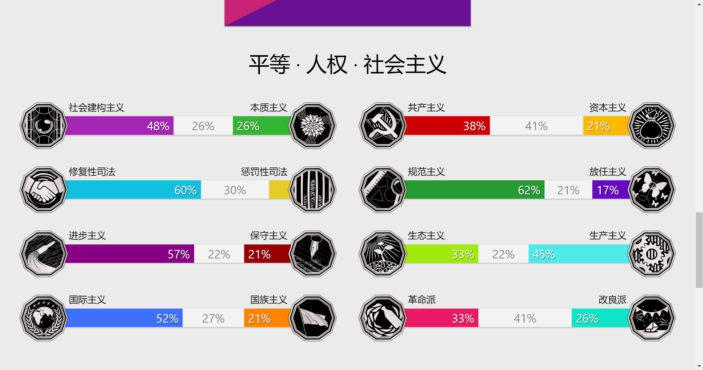

奇思妙想
图寻游戏
网络迷踪，在图片上找到位置，并点击地图。
由炒饭社区开发，文档：https://www.yuque.com/chaofun/tuxun
https://tuxun.fun/challenge?challengeId=71d46160-fa13-11ed-b657-ddf1f09f489e
ChatGPT 镜像
在线剪贴网站
- netcut.cn
- 在线代码分享 https://paste.org.cn/
邮政寄信
平信和挂号信，本市 0.8，出省出市 1.2，去 中国邮政 买邮票和信封。
Office365 E5 白嫖
粤语拼音英文名
https://www.namechef.co/zh/hkid-english-name/result/?name=黄家乐
黃 Wong / Ong / Wang
家 Ka
樂 Lok
AI 脸部生成器
https://thispersondoesnotexist.xyz/
See Pian
搜索引擎
duckduckgo.com
Windows10 精简系统
多功能 PE 系统
GPS 坐标拾取器
23.011217,113.046427 广东省佛山市禅城区东平路
李老师不是你老师民运官方网站
https://lilaoshibushinilaoshi.com/wulumuqinight/
政治倾向测试 Politi Scales (政治天平)

ChatGPT 分析：
根据你提供的 PolitiScales 政治倾向测试报告，你的政治倾向主要是平等、人权和社会主义。你的社会建构主义得分较高，说明你认为社会是可以被改变和塑造的，而不是由本质决定的。你的修复性司法得分较高，说明你支持通过司法手段来修复社会不公和保护弱势群体的权益。你的进步主义得分较高，说明你支持社会变革和改革，以促进社会进步和公正。你的国际主义得分较高，说明你支持国际合作和互助，以实现全球和平和繁荣。你的共产主义得分较低，但也表明你对社会主义思想持有一定的认同和支持。你的规范主义得分较高，说明你认为社会需要一定的规范和制度来维护秩序和公正。你的生态主义得分较低，但你仍然关注环境问题并认为应该采取措施来保护环境。最后，你的革命派和改良派得分相近，说明你既支持通过改良来推进社会变革，也支持通过革命手段来推翻不公和不平等的制度。
基于用户的得分分析，我们可以进一步推断出以下一些可能的政治立场和价值观：
- 社会主义：用户对共产主义的好感度较高，同时倾向于进步主义、国际主义和规范主义，这些都是社会主义思想的核心价值观。
- 平等和人权：用户的得分显示他非常重视平等和人权，这也是社会主义和进步主义的核心价值观。
- 修复性司法：用户支持修复性司法，这意味着他认为司法应该更注重矫正和改善罪犯，而不是仅仅惩罚他们。
- 生态主义：用户的得分显示他对生态主义持有一定的支持态度，这意味着他可能认为保护环境和可持续发展非常重要。
- 改良派：用户的得分显示他倾向于改良派，这意味着他可能认为改良和渐进式的改变比革命更可行和有效。
Hi 英文输入法
HI 英文输入法官网 可能是中文母语者最适合的输入法。